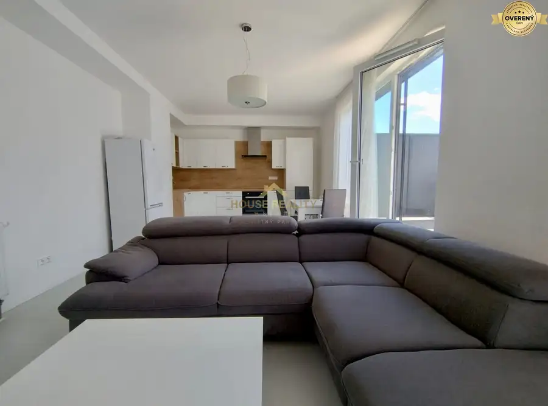
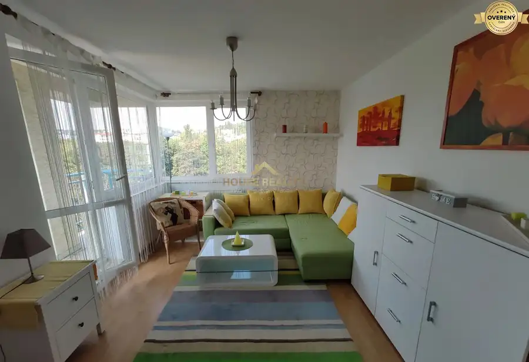
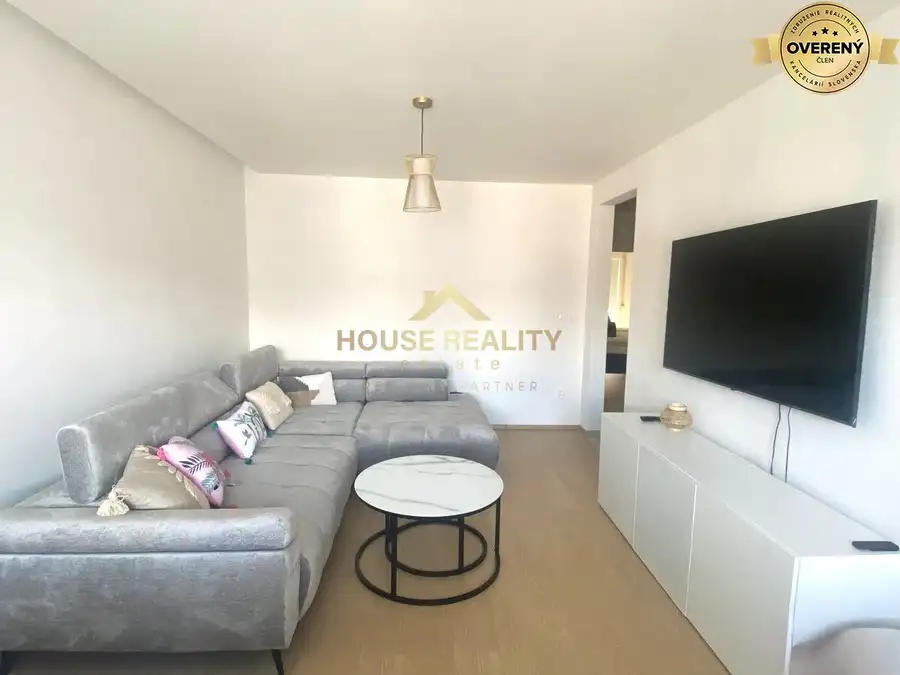

Prenájom SKY PARK 2 izbový byt, Továrenská ulica, BA I. Staré Mesto V
Staré Mesto, Bratislava
- Dispozícia2-izbový
- Plocha53 m²
- Poschodie14. z 30
- Vlastníctvoosobné
- Energetická triedaA
O nehnuteľnosti
House reality estate ponúka na prenájom elegantný
2 izbový byt v prestížnom projekte SKY PARK v Bratislave – Starom Meste, na ulici Továrenská.
Byt sa nachádza
na 14. poschodí z 30
v 3. veži SKY PARK, vďaka čomu ponúka príjemný výhľad a atmosféru moderného mestského bývania. Ideálna voľba pre tých, ktorí chcú mať centrum mesta, Dunaj, Euroveu, reštaurácie aj kompletnú občiansku vybavenosť doslova na dosah, no zároveň ocenia komfort a bezpečie prémiovej novostavby.
DISPOZÍCIA A VYBAVENIE
Byt s výmerou
53 m² + lodžia
pozostáva zo:
• vstupnej chodby,
• priestrannej obývacej izby spojenej s modernou kuchyňou,
• samostatnej nepriechodnej spálne,
• kúpeľne s vaňou,
• samostatného WC,
• lodžie s príjemným výhľadom.
Prenajíma sa kompletne zariadený a pripravený na okamžité nasťahovanie. K dispozícii sú kvalitné spotrebiče a vybavenie vrátane smart TV, centrálnej klimatizácie v celom byte, chladničky s mrazničkou, umývačky riadu, indukčnej varnej dosky, elektrickej rúry, vstavanej mikrovlnnej rúry a práčky.
KOMFORT SKY PARK
Bývanie v SKY PARK ponúka viac než len samotný byt. O komfort a bezpečie rezidentov sa stará 24-hodinová recepcia a k dispozícii sú 3 veľkokapacitné výťahy.
Pre obyvateľov domu je zároveň určená panoramatická vyhliadková terasa na najvyššom podlaží, ktorá ponúka jedinečné výhľady na Bratislavu.
K bytu patrí vyhradené parkovacie státie v podzemnej garáži, monitorované kamerovým systémom.
LOKALITA
SKY PARK patrí medzi najatraktívnejšie adresy v Bratislave. V bezprostrednom okolí nájdete množstvo kaviarní, reštaurácií, obchodov a služieb. Len pár minút pešo je Eurovea a nábrežie Dunaja, Slovenské národné divadlo, promenáda, detské ihriská či možnosti na šport a príjemné prechádzky.
Výhodou je aj výborná dostupnosť MHD a rýchle napojenie na bratislavský obchvat a mestské mosty.
CENA A PODMIENKY
Nájomné: 1 100€ / mesiac
Energie: 350€ / mesiac
Parkovacie státie: 100€ / mesiac
Celková mesačná cena: 1 550€
Depozit: 1 550€
Provízia RK: 1 100€
Byt je k dispozícii IHNEĎ a je vhodný pre 1–2 osoby, nefajčiarov, bez domácich zvierat.
Ak hľadáte moderné bývanie vo výškach, reprezentatívny projekt, výbornú adresu a komfort, ktorý vám umožní užívať si Bratislavu naplno, tento byt v SKY PARK určite stojí za pozornosť.
Parametre
| Celková rozloha | 53 m² |
|---|---|
| Úžitková plocha | 53 m² |
| Poschodie | 14/vyššie poschodie |
| Počet poschodí | 30 |
| Počet izieb | 2 |
| Vlastníctvo | osobné |
| Internet | nie |
| Kúpeľňa | vaňa |
| Vykurovanie | spoločné |
| Balkón | áno - 1 |
| Lódžia | nie |
| Terasa | nie |
| Pivnica | nie |
| Garáž | áno - 1 auto |
| Výťah | áno |
| Parkovanie | verejné |
| Postavené z | Zmiešané |
| Zariadenie | zariadený |
| Zateplený objekt | áno |
| Klimatizácia | áno |
| Káblová televízia | nie |
| Energetický certifikát | A |
| Predzáhradka | nie |
| Okná | plastové |
| Novostavba | áno |
| Dátum zverejnenia | 18. 8. 2026 |
Kde to je
Mohlo by Vás zaujímať

Byt10 1 700 €Novostavba 3 izbový byt, Dunajská ulica, Bratislava I. Staré Mesto Staré Mesto, Bratislava 3-izbový81 m²4. podlažie EXKLUZÍVNY 3IZBOVÝ BYT S VEĽKÝMI TERASAMI V SRDCI STARÉHO MESTA – DUNAJSKÁ ULICA Ponúkame na prenájom výnimočný, moderne zariadený 3 izb ový byt v…
Byt10 275 000 €Predaj pekný 2 izbový byt Račianske mýto, Bratislava III Nové Mesto Nové Mesto, Bratislava 2-izbový57 m²4. podlažie POPIS BYTU: Ponúkame na predaj pekný kompletne zariadený 2 izbový byt, Bratislava III Nové Mesto, Račianske mýto. Nachádza sa na 4/5 poschodí s…
Byt10 1 490 €Prenájom moderný 3 izbový byt, Jégého ulica, Bratislava II. Ružinov Ružinov, Bratislava 3-izbový95 m²6. podlažie POPIS BYTU: Ponúkame na prenájom moderný 3 izbový byt na Jégého ulici, Bratislava II. Ružinov. Nachádza sa na 6/8 poschodí tehlového bytového domu s…